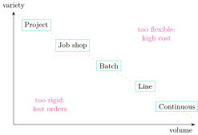

Model
| Process | Volume | Variety | Example | Key feature |
|---|---|---|---|---|
| Project | v. low | v. high | film, ship | unique products, no uniform |
| process, coordinate resources | ||||
| Job shop | low | high | engines, tools | no dedicated lines; parts move |
| among departments | ||||
| Batch | medium | medium | textiles | automation pays; set-up before |
| each new lot | ||||
| Line (mass) | high | low | cars | dedicated lines; cycle time |
| paces the plant; mixed-model | ||||
| Continuous | v. high | v. low | refinery | continuous flow, chemical |
| requirements |
Implications along the diagonal: from varied/unorganized flow, high discretion, general-purpose technology (project) to routine/predictable tasks, low discretion, specialist technology (continuous). Cruise ship vs car: a ship is a project (one-off, fixed position), a car a line process.
Service processes
| Type | Customization, labour | Volume | Example |
|---|---|---|---|
| Professional service | high, labour-intense | low | consulting firm |
| Service shop | intermediate; mix of | medium | bank, hotel |
| standard and custom | |||
| Mass service | standardized | high | utilities, transport |
Same industry, different processes: a retail bank's account management centre (mass) vs a financial analyst advising a client (professional); mass production of kitchen units vs craft "antique" furniture; a value-for-money hotel vs the lobby of an international luxury hotel.
Method
Exam analysis: (1) estimate volume and variety; (2) place on the diagonal; (3) check that layout, technology and job design match; (4) off-diagonal positions cost money — above: too flexible (high cost); below: too rigid (lost orders). See layouts.
Worked example
A firm assembling 50 custom robotic cells a year (low volume, high variety) using a dedicated line would be below the diagonal: rigid and underused. A job shop or project organization fits. A firm making 2 million identical bottles a year in a job shop would be above it: excessive flexibility and cost.
Pitfall
Batch is not "small line": it implies set-ups and intermittent flow. Process type follows volume–variety, not the industry name.
Recall
Draw the diagonal with five manufacturing and three service types, with examples.
Picture

Stay near the diagonal; off-diagonal positions carry cost or flexibility penalties.